전자계산기조직응용기사 (2014-03-02 기출문제)
1과목: 전자계산기 프로그래밍
1. 객체지향 기법에서 어떤 클래스에 속하는 구체적인 객체를 의미하는 것은?
- Method
- Operation
- Instance
- Message
(정답률: 61%)

2. 럼바우 객체 모델링 기법에서 사용하는 세 가지 모델링이 아닌 것은?
- 객체 모델링
- 기능 모델링
- 정적 모델링
- 동적 모델링
(정답률: 62%)
3. 객체지향 개념 중 하나 이상의 유사한 객체들을 묶어 공통된 특성을 표현한 데이터 추상화를 의미하는 것은?
- 클래스
- 메소드
- 추상화
- 상속성
(정답률: 75%)
4. C언어에서 문자열 출력 함수는?
- gets()
- getchar()
- puts()
- putchar()
(정답률: 63%)
5. C 언어의 데이터 형이 아닌 것은?
- long
- integer
- char
- double
(정답률: 61%)
6. C 언어의 특징으로 옳지 않은 것은?
- 컴파일 과정 없이 실행 가능하다.
- 시스템 프로그래밍 언어로 적합하다.
- 이식성이 높은 언어이다.
- 다양한 연산자를 제공한다.
(정답률: 74%)
7. C 언어에서 이스케이프 시퀀스의 설명이 옳지 않은 것은?
- \r : carriage return
- \f : fault
- \t : tab
- \b : backspace
(정답률: 72%)
8. C 언어에서 부호 없는 10진수 출력 명령에 사용되는 것은?
- %d
- %f
- %u
- %x
(정답률: 60%)
9. 어셈블러를 두 개의 패스로 구성하는 주된 이유는?
- 한 개의 패스만으로 사용하면 프로그램의 크기가 증가하여 유지보수가 어렵다.
- 기호를 정의하기 전에 사용할 수 있어 프로그램 작성이 용이하다.
- 한 개의 패스만을 사용하면 메모리가 많이 소요된다.
- 패스 1, 2의 어셈블러 프로그램이 작아서 경제적이다.
(정답률: 73%)
10. 객체 지향의 기본 개념 중 객체가 메시지를 받아 실행해야 할 객체의 구체적인 연산을 의미하는 것은?
- 상속성
- 메소드
- 추상화
- 캡슐화
(정답률: 70%)
11. 어셈블리어에서 어떤 기호적 이름에 상수 값을 할당하는 명령은?
- EQU
- INCLUDE
- ASSUME
- ORG
(정답률: 72%)
12. 모듈 작성시 주의사항으로 옳지 않은 것은?
- 모듈의 내용이 다른 곳에 적용 가능하도록 표준화 한다.
- 모듈 내의 요소들끼리의 응집도는 최대한 작게 한다.
- 자료의 추상화와 정보 은닉의 성격을 띠도록 해야 한다.
- 적절한 크기로 작성되어야 한다.
(정답률: 63%)
13. 원시 프로그램을 어셈블할 때 어셈블러가 해야 할 동작을 지시하는 명령을 무엇이라고 하는가?
- 리터럴 명령
- 기호 명령
- 기계 명령
- 어셈블러 명령
(정답률: 67%)
14. 한 위치의 문자열을 다른 위치의 문자열과 비교하는 어셈블리어 명령은?
- PRPE
- SCAS
- CMPS
- MOVS
(정답률: 67%)
15. 어셈블리어에서 DOS나 BIOS 루틴을 부르기 위해 사용하는 명령어는?
- INT
- TITLE
- INC
- REP
(정답률: 50%)
16. C 언어의 기억 클래스 종류에 해당하지 않는 것은?
- Internal Variables
- Automatic Variables
- Register Variables
- Static Variables
(정답률: 60%)
17. 기계어에 대한 설명으로 옳지 않은 것은?
- 컴퓨터가 해석할 수 있는 1 또는 0의 2진수로 이루어진다.
- 각 컴퓨터마다 모두 같은 기계어를 가진다.
- 실행할 명령, 데이터, 기억 장소의 주소 등을 포함한다.
- 프로그램 작성이 어렵고 복잡하다.
(정답률: 68%)
18. 객체지향에서 캡슐화에 대한 설명으로 옳지 않은 것은?
- 결합도가 높아진다.
- 재사용이 용이하다.
- 인터페이스를 단순화시킬수 있다.
- 응집도가 향상된다.
(정답률: 63%)
19. 수명 시간동안 고정된 하나의 값과 이름을 가진 자료로서 프로그램이 작동하는 동안 값이 절대로 바뀌지 않는 것을 의미하는 것은?
- 상수
- 변수
- 포인터
- 함수
(정답률: 75%)
20. 원시 프로그램을 기계어 프로그램으로 번역하는 대신에 기존의 고수준 컴파일러 언어로 전환하는 역할을 수행하는 것은?
- Loader
- Linker
- Preprocessor
- Cross Compiler
(정답률: 48%)
2과목: 자료구조 및 데이터통신
21. DNS(Domain Name System) 메시지 구조 중 헤더에 포함되어 있는 플래그 필드는 8개의 서브 필드로 구성되어 있다. 다음 설명이 해당되는 서브 필드는?
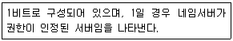
- QR
- RA
- AA
- RD
(정답률: 40%)
22. 인터넷 응용서비스 중 가상 터미널(Virtual Terminal) 기능을 갖는 것은?
- FTP
- Archie
- Gopher
- Telnet
(정답률: 59%)
23. 문자 위주의 전송에서 투명한 데이터의 전달을 위해 사용되는 제어 문자로 옳은 것은?
- DLE
- STX
- SYN
- DTM
(정답률: 40%)
24. HDLC(High-level Data Link Control)에서 링크 구성 방식에 따른 세 가지 모드에 해당되지 않는 것은?
- NRM
- ABM
- SBM
- ARM
(정답률: 61%)
25. 대역폭(bandwidth)에 대한 설명이 옳은 것은?
- 최저 주파수를 의미한다.
- 최고 주파수를 의미한다.
- 최고 주파수와 최저 주파수 사이 간격을 의미한다.
- 최저 주파수의 1/2을 의미한다.
(정답률: 74%)
26. 통신망의 체계적인 운용 및 관리를 위한 TMN(Telecommunication Management Network)의 기능 요소에 해당하지 않는 것은?
- Network Management Layer
- System Network Layer
- Element Management Layer
- Network Element Layer
(정답률: 35%)
27. WAN과 LAN의 설명으로 틀린 것은?
- WAN은 국가망 또는 각 국가의 공중통신망을 상호 접속 시키는 국제정보통신망으로 설계 및 구축, 운용된다.
- LAN은 사용자 구내망을 구축되며, 제한된 영역에서의 구내 사설 데이터 통신망으로 운영될 수 있다.
- LAN의 대표적인 예로는 일반 음성 전화망인 PSTN, 종합 정보통신망인 ISDN 등이 있다.
- WAN은 공중 통신망 사업자가 구축하고, 일반 대중 가입자들에게 보편적인 정보통신 서비스를 제공한다.
(정답률: 58%)
28. 인터넷상에 전용 회선과 같이 이용 가능한 가상적인 전용회선을 구축하여 데이터를 도청당하는 등의 행위를 방지하기 위한 통신 규약은?
- IIS
- IDS
- IPS
- IPSec
(정답률: 54%)
29. 데이터 전달을 위한 회선 제어 절차의 단계를 순서대로 나열한 것은?
- 데이터 링크 확립 → 회선 연결 → 데이터 전송 → 데이터 링크 해제 → 회선 절단
- 회선 연결 → 데이터 링크 확립 → 데이터 전송 → 데이터 링크 해제 → 회전 절단
- 데이터 링크 확립 → 회선 연결 → 데이터 전송 → 회선 절단 → 데이터 링크 해제
- 회선 연결 → 데이터 링크 확립 → 데이터 전송 → 회선 절단 → 데이터 링크 해제
(정답률: 61%)
30. OSI 7계층 중 링크설정 및 해제, 흐름 제어와 오류제어 등을 담당하는 계층은?
- 응용 계층
- 표현 계층
- 세션 계층
- 전송 계층
(정답률: 61%)
31. 다음의 트리에 대하여 inorder 방법으로 traverse 한 결과는?
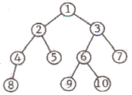
- 1, 2, 4, 8, 5, 3, 6, 9, 10, 7
- 8, 4, 5, 2, 9, 10, 6, 7, 3, 1
- 1, 2, 3, 4, 5, 8, 6, 7, 9, 10
- 8, 4, 2, 5, 1, 9, 6, 10, 3, 7
(정답률: 52%)
32. DBMS의 필수 기능이 아닌 것은?
- 정의 기능
- 설계 기능
- 조작 기능
- 제어 기능
(정답률: 70%)
33. 다음 설명에 해당하는 정렬 기법은?
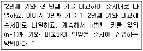
- Selection Sort
- Insertion Sort
- Bubble Sort
- Shell Sort
(정답률: 47%)
34. 데이터베이스의 3계층 스키마 중 다음은 무엇에 대한 설명인가?
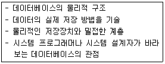
- 기술 스키마
- 외부 스키마
- 내부 스키마
- 개념 스키마
(정답률: 70%)
35. 데이터베이스 설계 순서로 옳은 것은?
- 논리적 설계 → 개념적 설계 → 물리적 설계
- 개념적 설계 → 논리적 설계 → 물리적 설계
- 물리적 설계 → 논리적 설계 → 개념적 설계
- 논리적 설계 → 물리적 설계 → 개념적 설계
(정답률: 68%)
36. 선형 자료구조로만 짝지어진 것은?
- 그래프, 스택, 큐, 트리
- 그래프, 스택, 트리
- 그래프, 큐, 트리
- 스택, 큐
(정답률: 67%)
37. 트랜잭션의 연산은 데이터베이스에 모두 반영되든지 아니면 전혀 반영되지 않아야 한다는 트랜잭션의 특성은?
- Consistency
- Isolation
- Durability
- Atomicity
(정답률: 58%)
38. 색인 순차 파일의 색인 구역으로 옳은 것은?
- 실린더 색인, 마스터 색인, 기본 색인
- 트랙 색인, 마스터 색인, 오버플로우 색인
- 트랙 색인, 실린더 색인, 기본 색인
- 트랙 색인, 실린더 색인, 마스터 색인
(정답률: 60%)
39. 데이터베이스의 특성이 아닌 것은?
- 이산적 변화
- 실시간 접근성
- 내용에 의한 참조
- 동시 공유
(정답률: 67%)
40. 해싱 기법에서 동일한 홈 주소로 인하여 충돌이 일어난 레코드들의 집합을 의미하는 것은?
- Overflow
- Bucket
- Collision
- Synonym
(정답률: 56%)
3과목: 전자계산기구조
41. 다음 논리회로의 결과로 옳은 것은?
- X
- Y
- X + Y

(정답률: 39%)
42. 보조기억장치의 일반적인 특징으로 옳지 않은 것은?
- 중앙처리장치와 직접 자료 교환이 불가능하다.
- 접근 시간(access time)이 크다.
- 일반적으로 주기억장치에 데이터를 저장할 때는 DMA 방식을 사용한다.
- CPU에 의한 기억장치의 접근 빈도가 높다.
(정답률: 30%)
43. 피연산자의 위치(기억 장소)에 따라 명령어 형식을 분류할 때 instruction cycle time이 가장 짧은 명령어 형식은?
- 레지스터-메모리 인스트럭션
- AC 인스트럭션
- 스택 인스트럭션
- 메모리-메모리 인스트럭션
(정답률: 48%)
44. 4비트의 데이터 비트와 1비트의 패리티 비트가 사용되는 경우 몇 개 비트까지 에러를 검출할 수 있는가?
- 1
- 2
- 3
- 4
(정답률: 51%)
45. 오류 검출용 코드가 아닌 것은?
- 해밍 코드
- 패리티 검사 코드
- Biquinary 코드
- Excess-3 코드
(정답률: 54%)
46. flynn의 분류법 중 여러 개의 처리기에서 수행되는 인스트럭션(instruction)들은 각기 다르나 전체적으로 하나의 데이터 스트림을 가지는 형태는?
- SISD
- MISD
- SIMD
- MIMD
(정답률: 61%)
47. 주소 설계시 고려해야 할 점이 아닌 것은?
- 주소를 효율적으로 나타낼 수 있어야 한다.
- 주소 공간과 기억 공간을 독립시킬 수 있어야 한다.
- 전반적으로 수행 속도가 증가될 수 있도록 해야 한다.
- 주소 공간과 기억 공간은 항상 일치해야 한다.
(정답률: 60%)
48. 주기억장치는 하드웨어 특성상 주기억장치가 제공할 수 있는 정보 전달 능력에 한계가 있는데, 이 한계를 무엇이라 하는가?
- 주기억장치 전달(transfer)
- 주기억장치 대역폭(bandwidth)
- 주기억장치 접근폭(accesswidth)
- 주기억장치 정보 전달폭(transferwidth)
(정답률: 60%)
49. 사용자 프로그램에 할당된 영역이 EC00h - FFFFh일 경우 사용 사능한 크기는 모두 몇 KByte인가?
- 3KByte
- 4KByte
- 5KByte
- 6KByte
(정답률: 37%)
50. 다음 소자 중에서 ROM과 유사한 성격을 가지며, AND array와 OR array로 구성된 것은?
- PLA
- shift register
- RAM
- LSI
(정답률: 49%)
51. 데이터의 주소를 표현하는 방식에 따라 분류할 때 계산에 의한 주소는 어디에 해당하는가?
- 완전 주소
- 약식 주소
- 생략 주소
- 자료 자신
(정답률: 44%)
52. 기억장치의 용량이 1M워드(word)이고 1워드가 32비트인 경우 PC(Program counter), MAR(memory address register). MBR(memory buffer register)의 각 비트수는?
- PC : 20비트, MAR : 20비트, MBR : 32비트
- PC : 20비트, MAR : 32비트, MBR : 32비트
- PC : 30비트, MAR : 20비트, MBR : 20비트
- PC : 32비트, MAR : 32비트, MBR : 20비트
(정답률: 50%)
53. 메모리 인터리빙(interleaving)의 설명으로 옳지 않은 것은?
- 단위 시간에 여러 메모리의 접근이 불가능하도록 하는 방법이다.
- 캐시 기억장치, 고속 DMA 전송 등에서 많이 사용된다.
- 기억장치의 접근시간을 효율적으로 높일 수 있다.
- 각 모듈을 번갈아 가면서 접근(access)할 수 있다.
(정답률: 54%)
54. 명령문 구성 형태 중 하나의 오퍼랜드가 누산기 속에 포함된 명령 형식은?
- 0-주소
- 1-주소
- 2-주소
- 3-주소
(정답률: 63%)
55. 순서 논리 회로에 대한 설명 중 옳지 않은 것은?
- 순서 논리 회로는 논리 게이트 외에 메모리 요소와 귀환(feedback) 기능을 포함한다.
- 순서 논리 회로의 출력은 현재 상태의 입력상태와 전상태에 의해 결정되며 회로의 동작은 내부 상태와 입력 들의 시간 순차에 의해 결정된다.
- 순서 논리 회로의 출력은 입력 상태와 메모리 요소들의 상태에 따라 값이 결정되므로 언제나 일정한 값을 갖지 않는다.
- 순서 논리회로는 현재 상태가 다음 상태의 출력에 영향을 미치는 논리 회로로서 플립플롭, 패리티 발생기, 멀티플렉서 등이 있다.
(정답률: 41%)
56. 마이크로 오퍼레이션에 대한 설명 중 옳지 않은 것은?
- 마이크로 오퍼레이션은 CPU 내의 레지스터들과 연상장치에 의해서 이루어진다.
- 프로그램에 의한 명령의 수행은 마이크로 오퍼레이션의 수행으로 이루어진다.
- 마이크로 오퍼레이션 중에 CPU 내부의 연산 레지스터, 인덱스 레지스터는 프로그램으로 레지스터의 내용을 변경할 수 없다.
- 마이크로 오퍼레이션이 실행될 때마다 CPU 내부의 상태는 변하게 된다.
(정답률: 52%)
57. 다음과 같은 마이크로 동작은 어떤 명령의 수행과정을 나타내는 것인가?
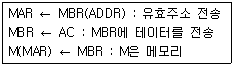
- Load to AC
- AND to AC
- Branch Unconditionally
- Store AC
(정답률: 45%)
58. 다음 중 2의 보수(2's complement) 가산 회로로서 정수 곱셈을 이용할 경우 필요 없는 것은?
- shift
- add
- complement
- normalize
(정답률: 43%)
59. 연산 명령 자체로 특수한 곱셈과 나눗셈을 수행하거나 혹은 곱셈과 나눗셈에 보조적으로 이용되는 것은?
- 산술적 shift
- 논리적 shift
- ADD
- rotate
(정답률: 57%)
60. 마이크로 명식으로 적합하지 않은 것은?
- 수평 마이크로 명령
- 제어 마이크로 명령
- 수직 마이크로 명령
- 나노 명령
(정답률: 35%)
4과목: 운영체제
61. 다음의 운영체제 운용 기법 중 라운드 로빈(Round Robin) 방식과 가장 관계되는 것은?
- 일괄 처리 시스템
- 시분할 시스템
- 실시간 처리 시스템
- 다중 프로그래밍 시스템
(정답률: 50%)
62. 디스크 스케줄링 기법 중 다음 설명에 해당하는 것은?
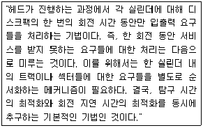
- SSTF 스케줄링
- Eschenbach 스케줄링
- FCFS 스케줄링
- N-SCAN 스케줄링
(정답률: 43%)
63. 세그먼테이션 기법에 대한 설명으로 옳지 않은 것은?
- 각 세그먼트는 고유한 이름과 크기를 갖는다.
- 세그먼트 맵 테이블이 필요하다.
- 프로그램을 일정한 크기로 나눈 단위로 세그먼트라고 한다.
- 기억장치 보호키가 필요하다.
(정답률: 35%)
64. 스레드의 특징으로 옳지 않은 것은?
- 실행 환격을 공유시켜 기억장소의 낭비가 줄어든다.
- 프로세스 외부에 존재하는 스레드도 있다.
- 하나의 프로세스를 여러 개의 스레드로 생성하여 병행성을 증진시킬 수 있다.
- 프로세서들간의 통신을 향상시킬 수 있다.
(정답률: 58%)
65. 프로세서의 상호 연결 구조 중 하이퍼 큐브 구조에서 각 CPU가 4개의 연결점을 가질 경우 CPU의 총 개수는?
- 4
- 16
- 32
- 65536
(정답률: 59%)
66. 3개의 페이지를 스용할 수 있는 주기억장치가 있으며, 초기에는 모두 비어 있다고 가정한다. 다음의 순서로 페이지가 참조가 발생할 때, FIFO 페이지 교체 알고리즘을 사용할 경우 몇 번의 페이지 결함이 발생하는가?
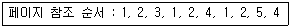
- 6
- 7
- 8
- 9
(정답률: 37%)
67. 다중 처리기 운영체제 현태 중 주/종(Master/Slave) 처리기에 대한 설명으로 옳지 않은 것은?
- 종 프로세서가 운영체제를 수행한다.
- 주 프로세서가 고장이나면 시스템 전체가 다운된다.
- 하나의 프로세서를 주 프로세서로 지정하고, 다른 처리기들은 종 프로세서로 지정하는 구조이다.
- 주 프로세서와 종 프로세서가 모두 입출력을 수행하기 때문에 비대칭 구조를 갖는다.
(정답률: 55%)
68. 프로세스(Process)에 대한 옳은 설명 모두를 나열한 것은?
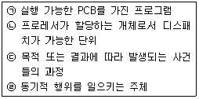
- (ㄱ), (ㄴ), (ㄷ)
- (ㄱ), (ㄴ), (ㄹ)
- (ㄱ), (ㄷ), (ㄹ)
- (ㄴ), (ㄷ), (ㄹ)
(정답률: 49%)
69. 다음 설명에 해당하는 디렉토리 구조는?
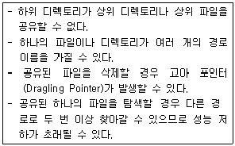
- 트리 디렉토리
- 1단계 디렉토리
- 2단계 디렉토리
- 비순환 그래프 디렉토리
(정답률: 42%)
70. 주기억장치 관리기법 중 Worst-fit을 적용할 경우 8K의 프로그램이 할당될 영역으로 옳은 것은?
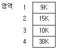
- 영역 1
- 영역 2
- 영역 3
- 영역 4
(정답률: 62%)
71. UNIX 파일 시스템의 inode에서 관리하는 정보가 아닌 것은?
- 파일의 링크수
- 파일이 만들어진 시간
- 파일이 최초로 수정된 시간
- 파일의 크기
(정답률: 54%)
72. HRN 방식으로 스케줄링 할 경우, 입력된 작업이 다음과 같을 때 우선순위가 가장 높은 것은?
- A
- B
- C
- D
(정답률: 52%)
73. 워킹 셋(Working Set)에 대한 설명으로 옳지 않은 것은?
- 프로세스가 실행하는 과정에서 시간이 지남에 따라 자주 참조하는 페이지들의 집합이 변화하기 때문에 워킷 셋은 시간에 따라 바뀌게 된다.
- 프로그램의 구역성(Locality)특징을 이용한다.
- 워킹 셋에 속한 페이지를 참조하면 프로세스의 기억장치 사용은 안정상태가 된다.
- 페이지 이동에 소요되는 시간과 프로세스 수행에 소요되는 시간의 차이를 의미한다.
(정답률: 45%)
74. 분산 운영체제 구조 중 다음의 특징을 갖는 것은?
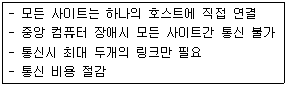
- 링 연결구조(RING)
- 다중접근 버스 연결구조(MULTI ACCESS BUS)
- 계층 연결구조(HIERARCHY)
- 성형 연결구조(STAR)
(정답률: 56%)
75. UNIX에서 새로운 프로세스를 생성하는 명령은?
- fork
- exit
- getpid
- pipe
(정답률: 56%)
76. 다음과 같은 접근제어 행령에 대한 설명 중 옳은 것은?(단, E : 실행가능, R : 판독가능, W : 기록가능, NONE : 모든 권한 없음)
- 김영수는 인사와 급여파일을 판독하고 기록할 수 있다.
- 이길동은 인사와 급여파일을 판독할 수 있다.
- 최동규는 급여 파일을 기록할 수 있다.
- 이길동은 인사파일에 대하여 실행, 판독, 기록의 권한을 가지고 있다.
(정답률: 58%)
77. UNIX에 대한 옳은 설명 모두를 나열한 것은
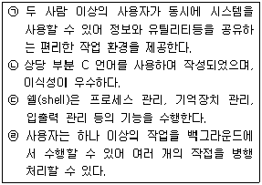
- (ㄱ), (ㄷ)
- (ㄱ), (ㄴ), (ㄷ)
- (ㄱ), (ㄴ), (ㄹ)
- (ㄱ), (ㄴ), (ㄷ), (ㄹ)
(정답률: 56%)
78. 운영체제의 목적 중 다음 설명에 해당하는 것은?
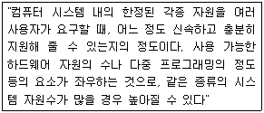
- reliability
- throughtput
- turn-around time
- availability
(정답률: 55%)
79. 운영체제에 대한 옳은 설명으로만 짝지어진 것은?
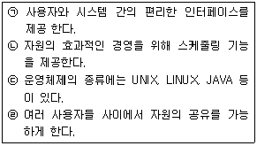
- (ㄱ), (ㄷ)
- (ㄱ), (ㄴ), (ㄹ)
- (ㄱ), (ㄷ), (ㄹ)
- (ㄱ), (ㄴ), (ㄷ), (ㄹ)
(정답률: 57%)
80. 프로세스 제어블록(Process Control Block)에 대한 설명으로 옳지 않은 것은?
- 프로세스에 할당된 자원에 대한 정보를 갖고 있다.
- 프로세서의 우선 순위에 대한 정보를 갖고 있다.
- 부모 프로세스와 자식 프로세스는 PCB를 공유한다.
- 프로세서의 현 상태를 알 수 있다.
(정답률: 47%)
5과목: 마이크로 전자계산기
81. 메인루틴에서 서브루틴 종류 후 다시 메인루틴으로 돌아올 수 있는 이유는?
- 서브루틴 호출시 파라미터로 전달해 주기 때문에
- 서브루틴 호출시 CALL 명령에 다음의 메모리 주소를 누산기에 저장하기 때문에
- 서브루틴 호출시 CALL 명령어 다음의 메모리 주소를 큐에 저장하기 때문에
- 서브루틴 호출시 CALL 명령어 다음의 메모리 주소를 스택에 저장하기 때문에
(정답률: 63%)
82. 다음 중 별도의 제어기를 필요로 하는 I/O 방식은?
- DMA 방식
- Memory mapped I?O 방식
- Polled I/O 방식
- Program controlled I/O 방식
(정답률: 46%)
83. 프로그래머가 프로그램 내에서 동일한 부분을 반복하여 사용하는 불편을 없애기 위해 사용하는 프로세서는?
- Macro Processor
- Compiler
- Assembler
- Loader
(정답률: 69%)
84. 동기식 비트 직렬 전송의 동작 순서로 옳은 것은?
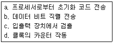
- b → a → c → d
- a → c → d → b
- a → d → b → c
- d → a → c → b
(정답률: 44%)
85. 각 데이터(data)의 끝 부분에 특별한 체크 바이트(byte)가 있어 에러(error)를 찾아내는 방법은?
- data flow check
- parity scheme check
- data conversion check
- cyclic redundancy check
(정답률: 42%)
86. IOP(Input-Output Processor)에 관한 내용으로 옳지 않은 것은?
- IOP는 여러 주변장치와 memory 장치 사이의 data 전송을 휘한 통로를 제공한다.
- 주변장치의 data 형식은 memory와 CPU의 data 형식이 같기 때문에 IOP는 이를 재구성할 필요가 없어 편리하게 data를 전송시킬수 있다.
- CPU는 IOP 동작을 시작하게 하는 일을 맡고 있으나 CPU에 의해서 개시된 입력명령은 IOP에서 실행된다.
- data가 전송되고 있는 동안 IOP는 발생하는 모든 error의 상태를 알리는 status word를 준비한다.
(정답률: 55%)
87. 응용 프로그래머를 위해 미리 프로그램 업체에서 제공하는 작업용 프로그램을 무엇이라 하는가?
- macro
- DBMS
- library program
- monitoring program
(정답률: 66%)
88. 조건부 분기명령의 실행에서 수행되어야 할 다음 명령어를 결정하기 위해서는 어느 레지스터의 내용을 조사하는가?
- 인덱스 레지스터(Index Register)
- 상태 레지스터(Status Register)
- 명령 레지스터(Instruction Register)
- 메모리 주소 레지스터(Memory Address Register)
(정답률: 43%)
89. 논리 블록간의 프로그램 가능 논리 교환 기능을 가진 SPLD를 근간으로 하고 있으며, 전기적 소거 및 르로그램 가능 읽기 전용 기억장치(EEPROM)나 플래시 메모리, 정적기억장치(SRAM)를 사용하는 것은?
- PAL
- CPLD
- EPGA
- ROM
(정답률: 49%)
90. 매크로(macro)의 설명과 관계 없는 것은?
- 매크로는 일종의 폐쇄적 서브루틴(closed subroutine)이다.
- 매크로 호출은 매크로 이름을 통해서만 가능하다.
- 매크로는 인수 전달이 가능하다.
- 매크로 확장(macro expansion)은 언어 번역 전에 행해진다.
(정답률: 36%)
91. 다음 마이크로 오퍼레이션과 관련 있는 것은?(단, EAC : 끝자리 올림과 누산기, AC : 누산기)
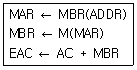
- AND
- ADD
- JMP
- BSA
(정답률: 66%)
92. 다음은 어떤 입출력 방식에 대한 설명인가?
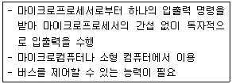
- 폴링 방식
- 플래그 검사방식
- DMA 방식
- 인터럽트 방식
(정답률: 60%)
93. RISC(Reduced Instruction Set Computer)에 대한 설명으로 틀린 것은?
- 하드웨어에서 스택을 지원한다.
- 메모리 접근 횟수를 줄이기 위해 많은 수의 레지스터를 사용한다.
- 빠른 명령어 해석을 위해 고정 명령어 길이을 사용한다.
- 비교적 전력 소모가 작기 때문에 임베디드 프로세서에서도 채택되고 있다.
(정답률: 36%)
94. CPU에서 연산시 한 개의 오퍼랜드(Operand) 역할을 하고, 연산의 결과가 저장되는 레지스터는?
- 누산기(Accumulator)
- 데이터 계수기(Data Counter)
- 프로그램 계수기(Program Counter)
- 명령 레지스터(Instruction Register)
(정답률: 57%)
95. 양극성 소자(bipolar)로 만든 비트 슬라이스(bit-slice) 마이크로프로세서의 장점과 단점이 순서대로 옳게 나열한 것은?
- 고도의 직접도, 속도가 느림
- 고도의 직접도, 가격이 저렴함
- 전력소비량이 적음, 낮은 직접도
- 빠른 속도, 단일 칩으로 제작이 안됨
(정답률: 59%)
96. 병렬 입출력 인터페이스(interface)의 특징으로 옳은 것은?
- 고속의 데이터를 전송할 수 있다.
- 원거리 통신에 사용한다.
- 전송을 위한 회선이 적게 사용된다.
- 입력된 직렬 데이터를 병렬 데이터로 변환시켜 주는 기능을 갖고 있다.
(정답률: 55%)
97. 50개의 입출력 외부 장치를 주소지정 하려고 한다. 최소 몇 개의 어드레스 선이 필요한가?
- 4개
- 5개
- 6개
- 7개
(정답률: 61%)
98. dynamic RAM과 static RAM의 설명 중 옳지 않은 것은?
- DRAM은 SRAM보다 일반적으로 기억 용량이 크다.
- DRAM은 SRAM보다 일반적으로 전력 소모가 크다
- DRAM은 일정 시간 내에 한 번씩 refresh 해야 한다.
- DRAM과 SRAM은 모두 휘발성이다.
(정답률: 47%)
99. 자료전송 방법에 관한 설명으로 옳지 않은 것은?
- 비동기 전송에서는 문자와 문자 사이 시간 간격은 일정하지 않다.
- 비동기 전송에서는 시작 비트와 정지 비트가 필요하다.
- 동기 전송에서는 송신 측과 수신 측의 클록에 대한 동기가 필요하다.
- 동기 전송은 1200 bps(bit per second) 이하의 통신 선로에 적합하다.
(정답률: 57%)
100. 기억장치 사상 입출력(memory mapped I/O) 방식에 대한 설명으로 옳은 것은?
- 입출력 전용 명령어를 사용하므로 프로그램 길이가 짧아진다.
- 입출력 장치의 개수와 관계없이 기억장치 주소 강간을 모두 사용할 수 있다.
- 프로그램에서 입출력과 기억장치 접근이 쉽게 구별 된다.
- 입출력과 기억장치 접근을 구별하는 제어신호가 없다.
(정답률: 33%)